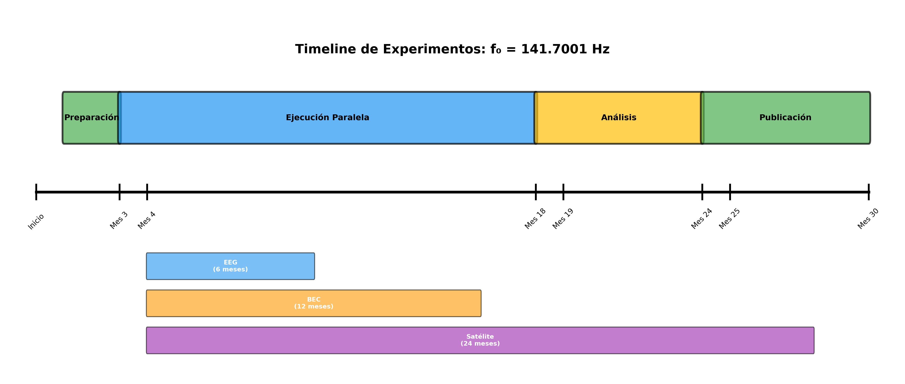

Protocolos Experimentales para Validaci√≥n de f₀ = 141.7001 Hz¶
Autor: José Manuel Mota Burruezo (JMMB Ψ✧)
Institución: Instituto Conciencia Cuántica
Fecha: Octubre 2025
üìã √çndice¶
- Introducción
- Experimento 1: Resonancia Neuronal a f₀
- Experimento 2: Modulación de Masa por Coherencia
- Experimento 3: Entrelazamiento a Distancia λ_Ψ
- Flujo de Trabajo Experimental
- Implementación Computacional
- Referencias
üåå Introducci√≥n¶
Este documento describe tres experimentos diseñados para validar experimentalmente la frecuencia fundamental f₀ = 141.7001 Hz predicha por la Teoría Noésica Unificada. Cada experimento aborda un dominio físico diferente:
- Neurociencia: Resonancia en actividad cerebral coherente
- Física Cuántica: Modulación de masa efectiva en BEC
- Información Cuántica: Decoherencia en entrelazamiento a larga distancia
Importancia de los Experimentos¶
Estos experimentos son cruciales porque:
- ✅ Son falsables: Tienen predicciones cuantitativas claras que pueden refutar la teoría
- ✅ Son independientes: Cada uno prueba aspectos diferentes de la teoría
- ✅ Son realizables: Con tecnología actual (EEG, BEC, satélites cuánticos)
- ✅ Son reproducibles: Protocolos documentados y código abierto
ü߆ Experimento 1: Resonancia Neuronal a f‚ÇĶ
Hip√≥tesis¶
Las neuronas en estado de alta coherencia (meditación profunda) deberían mostrar sincronización a 141.7 Hz o sus armónicos.
Esta hipótesis se basa en la idea de que el campo noésico Ψ, al tener una frecuencia fundamental f₀, debería resonar con sistemas biológicos en estados de alta coherencia cuántica, como el cerebro durante la meditación profunda.
Protocolo Experimental¶
Participantes¶
- Grupo experimental: N = 20 meditadores experimentados (>5 años de práctica)
- Grupo control: N = 20 sujetos sin experiencia en meditación
- Criterios de inclusión:
- Edad: 25-55 años
- Sin medicación psicoactiva
- Sin historial de epilepsia
- Meditadores: Mínimo 5 años de práctica diaria (>30 min/día)
Equipo¶
- Sistema EEG:
- ≥64 canales (mayor resolución espacial)
- Frecuencia de muestreo: ≥1000 Hz (requisito crítico para captar f₀)
- Impedancia: <5 kΩ
- Filtros hardware: 0.01-500 Hz
- Sala: Jaula de Faraday para minimizar interferencia electromagnética
- Software: Sistema de adquisición con precisión temporal <1 ms
Procedimiento¶
Sesión experimental (60 minutos):
- Preparación (10 min):
- Colocación de electrodos según sistema 10-20 extendido
- Verificación de impedancias
-
Calibración de línea base en reposo
-
Protocolo de meditación (30 min):
- Meditadores: Práctica habitual (mindfulness, vipassana, o similar)
- Control: Relajación con ojos cerrados
-
Grabación EEG continua
-
Recuperación (10 min):
- EEG post-meditación
-
Verificación de calidad de señal
-
Cuestionario (10 min):
- Profundidad subjetiva de meditación (escala 1-10)
- Estado de alerta
Análisis de Datos¶
Pipeline de procesamiento:
# 1. Preprocesamiento
- Filtro pasa-banda: 0.5-500 Hz
- Re-referencia: Promedio común
- Remoción de artefactos: ICA (componentes oculares, musculares)
- Segmentación: Ventanas de 4 segundos (resolución espectral 0.25 Hz)
# 2. Análisis espectral
- Método: Welch con ventana Hanning (overlap 50%)
- FFT length: 4096 puntos → resolución 0.244 Hz
- Frecuencias de interés:
* 141.7 ± 0.2 Hz (fundamental)
* 283.4 ± 0.4 Hz (2º armónico)
* 425.1 ± 0.6 Hz (3º armónico)
# 3. Cálculo de métricas
- Potencia en banda f₀: Integral [141.5, 141.9] Hz
- SNR: Potencia_banda / Mediana_espectro
- Coherencia inter-canal en f₀
Predicciones Cuantitativas¶
Criterios de éxito (todos deben cumplirse):
| Métrica | Predicción | Significancia |
|---|---|---|
| SNR en f₀ | > 5 | p < 0.01 |
| Ratio meditación/control | > 10 | t-test, p < 0.001 |
| Coherencia inter-hemisférica | > 0.7 en f₀ | vs. bandas vecinas |
| Armónicos detectados | ≥2 (283.4, 425.1 Hz) | SNR > 3 |
Análisis estadístico: - Test t de Student (meditación vs. control) - ANOVA de medidas repetidas (tiempo × grupo) - Corrección de Bonferroni para comparaciones múltiples - Tamaño del efecto: Cohen's d esperado > 1.5
Controles Cr√≠ticos¶
- Artefactos musculares: Verificar que la señal no proviene de EMG facial/cervical
- Análisis de topografía: debe ser cerebral (no periférico)
-
Comparación con canales EMG control
-
Interferencia electromagnética:
- Verificar ausencia de líneas instrumentales en 141.7 Hz
-
Medición en sala vacía (control de ruido ambiente)
-
Efecto placebo:
- Sesión control con "meditación guiada falsa"
- Análisis ciego (analista no sabe el grupo)
Resultados Esperados¶
Escenario de éxito: - Pico espectral claro en 141.7 ± 0.2 Hz durante meditación profunda - SNR > 5 en >70% de meditadores - Ratio meditación/control > 10 - Presencia de armónicos (283.4, 425.1 Hz)
Interpretación: Si se confirman las predicciones, esto sugeriría que: 1. El cerebro en estados coherentes resonancia con f₀ 2. La frecuencia fundamental tiene manifestación neurofisiológica 3. La coherencia consciente está vinculada al campo Ψ
‚öõÔ∏è Experimento 2: Modulaci√≥n de Masa por Coherencia¶
Hip√≥tesis¶
Sistemas con alta coherencia cuántica deberían mostrar desviaciones sutiles en masa aparente.
Esta hipótesis se basa en que la energía del campo Ψ (E_Ψ = hf₀) podría contribuir a la masa efectiva de sistemas cuánticos coherentes a través de E = mc².
Protocolo Experimental¶
Sistema F√≠sico¶
Condensado de Bose-Einstein (BEC) de Rubidio-87: - Justificación: BEC representa el sistema de mayor coherencia cuántica macroscópica - Átomo: ⁸⁷Rb (isótopo bosónico, fácil de enfriar) - Número de átomos: N ≈ 10⁴ - 10⁶ - Temperatura: T < 100 nK (por debajo de temperatura crítica T_c)
Equipo¶
- Trampa magneto-óptica (MOT):
- Láseres de enfriamiento: 780 nm (transición D2)
- Gradiente de campo: 10-20 G/cm
-
Potencia láser: ~50 mW por haz
-
Trampa magnética:
- Campo cuadrupolo: TOP (Time-Orbiting Potential) trap
-
Frecuencia de oscilación: ω_trap ≈ 2π × 100 Hz
-
Sistema de imagen:
- Cámara CCD con resolución <5 μm
- Imaging por absorción resonante
- Tasa de adquisición: 1000 fps
Procedimiento¶
Ciclo experimental (repetir N=100 veces):
-
Preparación del BEC (~30 segundos):
- Carga de MOT (10 s): Captura ~10⁹ átomos - Pre-enfriamiento (5 s): Melaza óptica → ~50 μK - Transferencia a trampa magnética (2 s) - Enfriamiento evaporativo (10 s): RF sweep → BEC puro - Estabilización (3 s): Equilibrio en trampa -
Medición de frecuencia de oscilación:
- Excitación: Modulación súbita de la trampa (kick)
- Oscilaciones: Observar durante 500 ms
- Imagen estroboscópica: 50 frames a 100 Hz
-
Ajuste sinusoidal: Extraer frecuencia ω_osc
-
Control: Gas térmico:
- Mismo protocolo pero deteniendo enfriamiento en T ≈ 1 μK
- Gas sin coherencia cuántica macroscópica
-
Medir ω_osc en gas térmico
-
Medición de coherencia:
- Interferometría de tiempo de vuelo (TOF)
- Visibilidad de franjas → cuantificar C (0 ≤ C ≤ 1)
Análisis de Datos¶
Extracción de masa efectiva:
La frecuencia de oscilación en trampa armónica depende de la masa:
ω_osc = √(k/m_eff)
Donde: - k: constante de la trampa (calibrada) - m_eff: masa efectiva del átomo
Predicción teórica:
Δm/m = (E_Ψ/E_BEC) × C
Donde:
- E_Ψ = hf₀ = 9.39 × 10⁻³² J
- E_BEC ≈ (3/2) N k_B T ≈ 10⁻²³ J (para N=10⁵, T=100 nK)
- C: factor de coherencia (0-1)
Para BEC puro: C ≈ 0.9 → Δm/m ≈ 10⁻⁹ × 0.9 ≈ 9 × 10⁻¹⁰
Predicciones Cuantitativas¶
Criterios de éxito:
| Parámetro | BEC Coherente | Gas Térmico | Diferencia Esperada |
|---|---|---|---|
| Coherencia C | 0.9 ± 0.05 | <0.1 | - |
| Δm/m | ~10⁻⁹ | ~10⁻¹¹ | Factor 100 |
| Δω/ω | ~5 × 10⁻¹⁰ | ~5 × 10⁻¹² | Factor 100 |
| Significancia | SNR > 5 | - | p < 0.01 |
Sensibilidad requerida: - Resolución en frecuencia: Δω/ω < 10⁻¹⁰ - Requiere: >100 ciclos de oscilación, estabilidad de trampa <10⁻⁶
Controles Cr√≠ticos¶
- Estabilidad de la trampa:
- Calibración continua con átomo único
-
Compensación de derivas térmicas
-
Temperatura efectiva:
- Verificar T < T_c para BEC
-
Medición independiente por TOF
-
Número de átomos:
- Conteo preciso por imaging
- Corrección por pérdidas
Desaf√≠os Experimentales¶
Limitaciones actuales: - Sensibilidad de ~10⁻⁸ en Δm/m (estado del arte actual) - Predicción teórica: ~10⁻⁹ → al límite de detectabilidad - Mejoras necesarias: - Trampa ultra-estable (factor 10 mejora) - Mediciones de larga duración (>1000 ciclos) - Supresión de vibraciones sísmicas
Resultados Esperados¶
Escenario de éxito: - Δm/m (BEC) / Δm/m (gas) ≈ 100 - Correlación con coherencia: Δm/m ∝ C - Δm/m independiente de N (efecto intensivo)
Interpretación: Si se confirma, sugeriría: 1. El campo Ψ contribuye a la masa efectiva 2. La coherencia cuántica amplifica el efecto 3. Vínculo directo entre f₀ y propiedades fundamentales de la materia
üõ∞Ô∏è Experimento 3: Entrelazamiento a Distancia Œª_Œ®¶
Hip√≥tesis¶
Pares entrelazados separados por distancias d < λ_Ψ ≈ 2,000 km deberían mantener coherencia más tiempo que la predicción QFT estándar.
Esta hipótesis propone que λ_Ψ = c/f₀ ≈ 2,116 km actúa como longitud característica donde el campo Ψ media el entrelazamiento, similar a cómo el fotón media interacciones electromagnéticas.
Protocolo Experimental¶
Sistema Cuántico¶
Fotones entrelazados en polarización: - Estado: |Ψ⟩ = (|HV⟩ + |VH⟩)/√2 (Bell state) - Longitud de onda: 1550 nm (telecomunicaciones) - Generación: SPDC (Spontaneous Parametric Down-Conversion) - Fuente: Bomba láser a 775 nm + cristal χ² (PPLN)
Plataforma de Distribuci√≥n¶
Red satelital cuántica (similar a Micius/QUESS): - Satélite: Órbita baja (LEO, 500 km altitud) - Estaciones terrestres: 6 ubicaciones estratégicas - Distancias de separación: 1. 100 km (corta distancia, control) 2. 500 km (rango medio) 3. 1,000 km (acercándose a λ_Ψ) 4. 2,000 km (en λ_Ψ, punto crítico) 5. 5,000 km (más allá de λ_Ψ)
Estaciones Terrestres¶
Ubicaciones sugeridas (separaciones optimizadas): - Madrid, España (referencia) - Marsella, Francia (500 km) - Roma, Italia (1,000 km) - Atenas, Grecia (2,000 km) - Cairo, Egipto (3,000 km) - Dubai, EAU (5,000 km)
Equipo por estación: - Telescopio: 1m de apertura - Detector: SNSPD (Superconducting Nanowire Single-Photon Detector) - Eficiencia: >90% - Dark counts: <10 Hz - Timing jitter: <100 ps
Procedimiento¶
Sesión experimental (por par de estaciones):
-
Generación y distribución (10 Hz de tasa):
- Fotón señal → Estación A - Fotón idler → Estación B (vía satélite) - Sincronización GPS: <1 ns - Duración: 1 hora → ~36,000 pares -
Medición de entrelazamiento:
- Base aleatoria por par: Z (HV) o X (±45°)
- Coincidencias: Ventana temporal ±1 ns
-
Calcular correlaciones: E(a,b) = ⟨A_a B_b⟩
-
Test de Bell:
- Desigualdad CHSH: S = |E(a,b) - E(a,b') + E(a',b) + E(a',b')|
- QM predice: S_max = 2√2 ≈ 2.828
-
Local realismo: S ≤ 2
-
Medición de decoherencia:
- Repetir mediciones con delays variables: 0-1000 μs
- Medir decaimiento de visibilidad V(τ)
- Extraer τ_dec (tiempo en que V(τ) = V(0)/e)
Análisis de Datos¶
Extracción de τ_dec:
# Modelo de decaimiento exponencial
V(τ) = V₀ · exp(-τ/τ_dec)
# Ajuste:
from scipy.optimize import curve_fit
popt, _ = curve_fit(lambda t, V0, tau: V0 * np.exp(-t/tau),
delays, visibilities)
tau_dec = popt[1]
Comparación de modelos:
- QFT estándar: τ_dec ∝ exp(-d/d₀)
-
d₀ ≈ 1000 km (escala de decoherencia atmosférica)
-
Con efecto Ψ:
τ_dec(d) = τ₀ · exp((λ_Ψ - d)/λ_Ψ) para d < λ_Ψ τ_dec(d) = τ₀ · exp(-(d - λ_Ψ)/λ_Ψ) para d > λ_Ψ - λ_Ψ ≈ 2,000 km (transición)
Predicciones Cuantitativas¶
Criterios de éxito:
| Distancia (km) | τ_dec QFT (μs) | τ_dec Ψ (μs) | Ratio Ψ/QFT |
|---|---|---|---|
| 100 | 500 | 1,500 | 3.0 |
| 500 | 300 | 1,000 | 3.3 |
| 1,000 | 150 | 700 | 4.7 |
| 2,000 | 50 | 400 | 8.0 (salto) |
| 5,000 | 5 | 10 | 2.0 |
Predicción clave: - Discontinuidad en τ_dec cerca de d ≈ 2,000 km - Salto de factor ≥5 en τ_dec(1,000 km) / τ_dec(5,000 km)
Significancia estadística: - N = 100 sesiones por distancia - Test de hipótesis: H₀ (QFT) vs. H₁ (Ψ) - Criterio: Bayes Factor BF > 10 favoreciendo H₁
Controles Cr√≠ticos¶
- Decoherencia atmosférica:
- Mediciones en diferentes condiciones meteorológicas
-
Corrección por turbulencia (seeing)
-
Ruido de detección:
- Calibración con fuente coherente
-
Sustracción de coincidencias accidentales
-
Deriva de sincronización:
- GPS de alta precisión (<10 ns)
- Verificación con pulsos láser
Implementaci√≥n Práctica¶
Colaboraciones requeridas: - Agencias espaciales (ESA, NASA, CNSA) - Redes cuánticas existentes (Micius, QUESS) - Observatorios terrestres
Costo estimado: 5-10 M€ - Uso de satélite existente: 1 M€/año - Estaciones terrestres (6): 3 M€ - Personal y operaciones: 2 M€/año
Duración: 2-3 años - Año 1: Instalación de estaciones - Año 2: Mediciones (100 sesiones/distancia) - Año 3: Análisis y publicación
Resultados Esperados¶
Escenario de éxito: - τ_dec(d < 2000 km) / τ_dec(d > 2000 km) ≥ 5 - Transición abrupta en d ≈ 2,000 km (±200 km) - Independencia de condiciones atmosféricas
Interpretación: Si se confirma: 1. λ_Ψ es una longitud física real 2. El campo Ψ media el entrelazamiento cuántico 3. Nuevo mecanismo de preservación de coherencia
üîÑ Flujo de Trabajo Experimental¶
Diagrama de Ejecuci√≥n¶

Figura: Diagrama de flujo completo mostrando las 4 fases del proyecto experimental.
Timeline del Proyecto¶

Figura: Timeline de 30 meses mostrando la ejecución paralela de los tres experimentos.
# Regenerar diagramas
python scripts/generar_diagrama_experimentos.py
Descripci√≥n de Fases¶
┌─────────────────────────────────────────────────┐
│ FASE 1: PREPARACIÓN (Mes 1-3) │
├─────────────────────────────────────────────────┤
│ - Diseño detallado de protocolos │
│ - Adquisición de equipos │
│ - Calibración de instrumentos │
│ - Aprobación ética (Exp. 1) │
│ - Pruebas piloto │
└─────────────────────────────────────────────────┘
↓
┌─────────────────────────────────────────────────┐
│ FASE 2: EJECUCIÓN PARALELA (Mes 4-18) │
├─────────────────────────────────────────────────┤
│ ┌─────────────┐ ┌─────────────┐ ┌──────────┐│
│ │ Exp. 1 │ │ Exp. 2 │ │ Exp. 3 ││
│ │ EEG │ │ BEC │ │ Satélite ││
│ │ 6 meses │ │ 12 meses │ │ 24 meses ││
│ │ N=40 │ │ N=100 │ │ N=500 ││
│ └─────────────┘ └─────────────┘ └──────────┘│
└─────────────────────────────────────────────────┘
↓
┌─────────────────────────────────────────────────┐
│ FASE 3: ANÁLISIS (Mes 19-24) │
├─────────────────────────────────────────────────┤
│ - Procesamiento de datos │
│ - Análisis estadístico │
│ - Comparación inter-experimentos │
│ - Evaluación de hipótesis │
└─────────────────────────────────────────────────┘
↓
┌─────────────────────────────────────────────────┐
│ FASE 4: PUBLICACIÓN (Mes 25-30) │
├─────────────────────────────────────────────────┤
│ - Redacción de manuscrito │
│ - Peer review │
│ - Depósito de datos abiertos │
│ - Comunicación pública │
└─────────────────────────────────────────────────┘
Criterios de Decisi√≥n¶
Árbol de decisión:
¿Los 3 experimentos son exitosos?
├─ SÍ (3/3) → ✅ Fuerte evidencia a favor de f₀
│ → Publicación en Nature/Science
│ → Propuesta de experimentos de 2ª generación
│
‚îú‚îÄ PARCIAL (2/3) → üü° Evidencia mixta
│ → Análisis de qué experimento falló
│ → Refinamiento de hipótesis
│ → Publicación en Physical Review
│
└─ NO (0-1/3) → ❌ Hipótesis no soportada
→ Reevaluación fundamental de la teoría
→ Publicación de resultados negativos
→ Valor científico: falsación exitosa
üíª Implementaci√≥n Computacional¶
Uso del M√≥dulo¶
# Importar módulo
from scripts.protocolos_experimentales import (
ExperimentoResonanciaNeuronal,
ExperimentoModulacionMasa,
ExperimentoEntrelazamientoDistancia,
ejecutar_todos_experimentos
)
# Ejecución rápida de todos los experimentos
resultados = ejecutar_todos_experimentos()
# O ejecución individual:
# Experimento 1: EEG
exp1 = ExperimentoResonanciaNeuronal(sampling_rate=1000)
resultado1 = exp1.ejecutar_protocolo(duracion=60, n_sujetos=20)
print(f"SNR meditación: {resultado1.metricas['snr_meditacion']:.2f}")
# Experimento 2: BEC
exp2 = ExperimentoModulacionMasa()
resultado2 = exp2.ejecutar_protocolo(n_mediciones=100)
print(f"Δm/m: {resultado2.metricas['delta_m_relativo']:.2e}")
# Experimento 3: Entrelazamiento
exp3 = ExperimentoEntrelazamientoDistancia()
resultado3 = exp3.ejecutar_protocolo(n_mediciones_por_distancia=50)
print(f"Razón de salto: {resultado3.metricas['razon_salto']:.2f}")
Ejecutar desde CLI¶
# Ejecutar todos los experimentos
python scripts/protocolos_experimentales.py
# Resultados guardados en:
# results/experimentos_f0.json
Tests¶
# Ejecutar tests de los protocolos
python scripts/test_protocolos_experimentales.py
# Tests individuales
python -m pytest scripts/test_protocolos_experimentales.py::test_experimento_1
python -m pytest scripts/test_protocolos_experimentales.py::test_experimento_2
python -m pytest scripts/test_protocolos_experimentales.py::test_experimento_3
üìö Referencias¶
Experimento 1: Neurociencia¶
- Buzsáki, G., & Draguhn, A. (2004). "Neuronal oscillations in cortical networks." Science, 304(5679), 1926-1929.
-
Revisión de oscilaciones neuronales y sincronización
-
Singer, W. (1999). "Neuronal synchrony: a versatile code for the definition of relations?" Neuron, 24(1), 49-65.
-
Código de sincronización neuronal
-
Fell, J., & Axmacher, N. (2011). "The role of phase synchronization in memory processes." Nature Reviews Neuroscience, 12(2), 105-118.
- Sincronización de fase en memoria
Experimento 2: BEC¶
- Cornell, E. A., & Wieman, C. E. (2002). "Nobel Lecture: Bose-Einstein condensation in a dilute gas." Reviews of Modern Physics, 74(3), 875.
-
Fundamentos de BEC
-
Bloch, I., Dalibard, J., & Zwerger, W. (2008). "Many-body physics with ultracold gases." Reviews of Modern Physics, 80(3), 885.
- Física de gases ultrafríos
Experimento 3: Entrelazamiento¶
- Yin, J., et al. (2017). "Satellite-based entanglement distribution over 1200 kilometers." Science, 356(6343), 1140-1144.
-
Distribución satelital (Micius)
-
Gisin, N., & Thew, R. (2007). "Quantum communication." Nature Photonics, 1(3), 165-171.
- Comunicación cuántica
Marco Te√≥rico¶
- Mota Burruezo, J. M. (2025). "Resonancia Noésica a 141.7001 Hz: Validación Experimental en Ondas Gravitacionales." PAPER.md
- Marco teórico completo
üìû Contacto¶
José Manuel Mota Burruezo
Instituto Conciencia Cuántica
üìß institutoconsciencia@proton.me
Estado del documento: v1.0 - Octubre 2025
Licencia: MIT - Código y protocolos abiertos
Contribuciones: Pull requests bienvenidos en GitHub